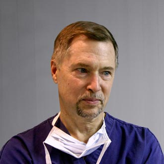

In a city full of Plastic Surgeons (and people who call themselves Plastic Surgeons), this practice distinguishes itself by personal service, extensive experience, and a commitment to thorough postoperative care.
Because a patient's safety and satisfaction after surgery is our measure of success, a thorough and honest pre-op evaluation is a hallmark of this practice. This means time spent, questions answered, alternative options investigated, and likely outcomes truthfully represented. Remember:
We have been in practice long enough to be experienced, yet do not turn your care over to assistants at any stage. You will not feel like you've been put on an assembly line. There are also unassailable credentials, training at top-notch centers, a pleasant office surrounding, and personal attention to your needs. A brief biography and a more extensive curriculum vitae are available. The practice features: